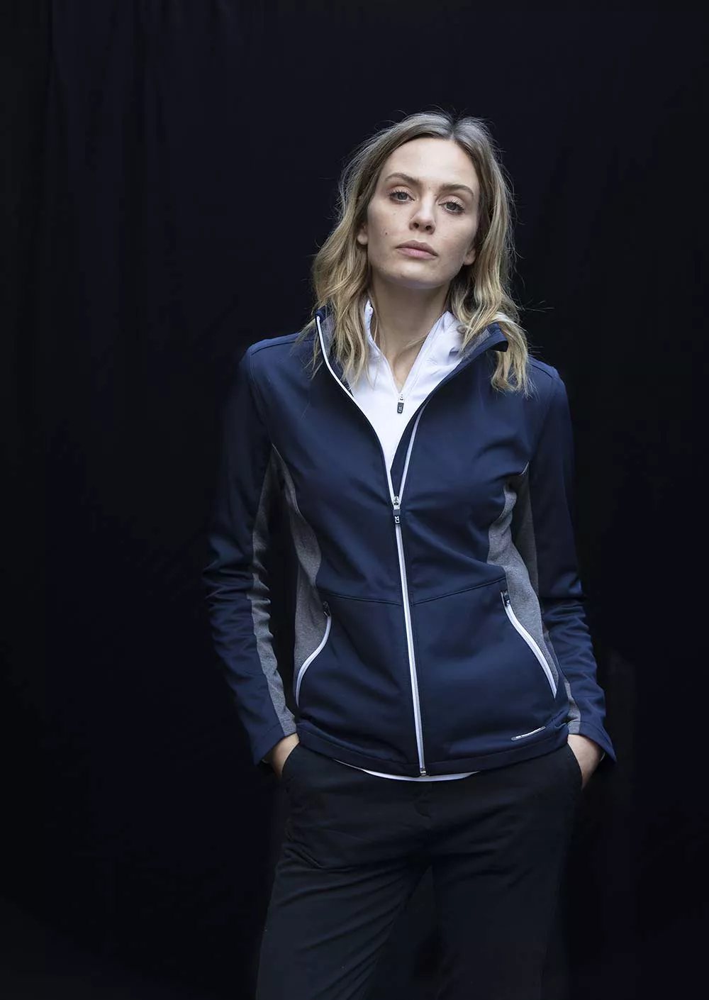

Profilkläder och arbetskläder
Det finns många alternativ för att marknadsföra ditt företag. En
av de bästa (och mest ekonomiska) strategierna är dock att låta
trycka din logotyp på profilkläder av kända märken.
Anpassade kläder kan ge dina anställda ett mer polerat och etablerat utseende samtidigt som de ökar trovärdigheten för ditt företag. En väldesignad logotyp förmedlar till potentiella kunder att ni tar er verksamhet på allvar och ser snygg och högkvalitativ ut.
I den här artikeln går vi igenom fördelarna med skräddarsydda profilkläder och ger några råd om hur du väljer den bästa klädseln och skapar din logotyp. Läs vidare för att få reda på mer!
Anpassade kläder kan ge dina anställda ett mer polerat och etablerat utseende samtidigt som de ökar trovärdigheten för ditt företag. En väldesignad logotyp förmedlar till potentiella kunder att ni tar er verksamhet på allvar och ser snygg och högkvalitativ ut.
I den här artikeln går vi igenom fördelarna med skräddarsydda profilkläder och ger några råd om hur du väljer den bästa klädseln och skapar din logotyp. Läs vidare för att få reda på mer!
Varför ska ditt företag överväga att skapa anpassade profilkläder av märkeskläder?
När du startar ett företag vill du göra allt i din makt för att positionera det för framgång. Att köpa kläder med en anpassad logotyp är ett sätt att uppnå detta.Kläder med anpassade varumärken kan vara en klok investering för ditt företag av flera olika skäl. Till att börja med kan det hjälpa ditt företag att ge en professionell bild. Detta är avgörande eftersom det kan uppmuntra kunderna att lita på och respektera ditt företag.
Dessutom kan kläder med anpassade märken hjälpa till att effektivt marknadsföra ditt varumärke. De kan fungera som ett sätt att göra reklam och hjälpa till att sprida kännedom om ditt företag bland nya målgrupper.
Om du därför letar efter ett sätt att utveckla ditt företag, tänk på att göra ett köp av anpassade profilkläder!
Hur kan anpassade profilkläder av märkeskläder kan hjälpa ditt företag att växa?
Presentera alltid ditt bästa jag när du startar ett företag. Att investera i anpassade märkeskläder är ett av de bästa sätten att uppnå detta.Att bära kläder med ditt företags namn eller logotyp på förstärker ditt varumärke och hjälper dig att projicera en professionell image. Dessutom främjar det en känsla av identitet och lagarbete bland dina anställda.
Om du letar efter ett sätt att öka ditt företag är därför anpassade märkeskläder utan tvekan rätt väg att gå!
Hur man börjar med anpassade märkeskläder
Du har fattat beslutet att utöka ditt företag och börja trycka personliga profilkläder, eller hur? Det är fantastiskt! Här är några tips som kan hjälpa dig att komma igång:1. Välj en stil och ett färgschema . Det är viktigt att hålla det enkelt när det gäller kläder. Avvik inte från några enkla nyanser och mönster som passar bra till andra plagg i din garderob
2. Prata med en kvalificerad tryckare . Att arbeta med ett företag som har erfarenhet av att skriva ut skräddarsydda kläder är avgörande. De kommer att kunna ge dig råd om den bästa tygtypen och trycktekniken för dina behov.
3. Ha roligt med det ! Det här är din möjlighet som företagare att visa upp din personlighet och känsla för stil. Tänk kreativt och okonventionellt. När det gäller skräddarsydda profilkläder finns det inga begränsningar - ha kul!
Vad du ska ta hänsyn till när du skapar anpassade kläder i kända varumärken.
Det finns några saker att tänka på när du vill sätta din företagslogotyp på anpassade profilkläder. Vilken typ av kläder är du ute efter? Vilket mode passar bäst? Den mest avgörande faktorn är att tänka på vad din målgrupp vill ha på sig.Det är viktigt att välja kläder som på ett korrekt sätt förmedlar ditt företags varumärke. Att klistra din logotyp på ett par cargobyxor och kalla det en dag kommer inte att ge ditt företag ett professionellt utseende. Lägg i stället din uppmärksamhet på eleganta, fashionabla kläder som hjälper dina kunder att känna sig nöjda med sig själva och se ut på bästa sätt.
Tänk utanför boxen och välj något unikt när det gäller anpassade profilkläder. Genom att fatta rätt beslut kan du främja ditt företag.

Men det kan vara svårt att veta var man ska börja med så många alternativ som finns tillgängliga. Hur kan du se till att dina anpassade profilkläder blir en succé? Här är några tips:
1. Säkerställ produktens kvalitet . Du vill definitivt inte att dina kläder ska börja sönderfalla efter bara några tvättar. Välj en pålitlig leverantör som kan garantera högkvalitativa tryck och material. Fördelen med profilkläder av märkeskläder är att du vet att produkten håller en hög kvalité
2. Tänk på vem du vill nå ut till . Tänk på vilka stilar och färger som kommer att tilltala dem mest när du väljer dina profilkläder.
3. Se till att det är enkelt . På en skjorta eller jacka kan en upptagen logotyp eller komplex design se snygg ut, men den är ofta svår att läsa. För bästa resultat ska du hålla ditt varumärke enkelt och lättläst.
Hur du säkerställer framgången för dina anpassade företagskläder
Att investera i skräddarsydda profilkläder är ett fantastiskt sätt att öka ditt företags framgång. Du kan ge dina anställda och kunder ett polerat och professionellt utseende som hjälper dem att sticka ut från konkurrenterna genom att låta ditt företags namn och logotyp tryckas på högkvalitativa kläder.Men det kan vara svårt att veta var man ska börja med så många alternativ som finns tillgängliga. Hur kan du se till att dina anpassade profilkläder blir en succé? Här är några tips:
1. Säkerställ produktens kvalitet . Du vill definitivt inte att dina kläder ska börja sönderfalla efter bara några tvättar. Välj en pålitlig leverantör som kan garantera högkvalitativa tryck och material. Fördelen med profilkläder av märkeskläder är att du vet att produkten håller en hög kvalité
2. Tänk på vem du vill nå ut till . Tänk på vilka stilar och färger som kommer att tilltala dem mest när du väljer dina profilkläder.
3. Se till att det är enkelt . På en skjorta eller jacka kan en upptagen logotyp eller komplex design se snygg ut, men den är ofta svår att läsa. För bästa resultat ska du hålla ditt varumärke enkelt och lättläst.
Frågor och svar om märkeskläder och profilkläder
Du kanske överväger att låta trycka ditt företags logotyp på professionella och personliga kläder. Det är en fantastisk plan! Här är några av de vanligaste frågorna vi får från företagare om märkeskläder.Var ska mitt företags logotyp tryckas?
Vanligtvis är vänster bröstkorg, strax ovanför hjärtat, den bästa platsen för att trycka en logotyp. Detta är en fantastisk plats för synlighet och hyllning.
Hur många kläder ska jag beställa?
Beroende på hur mycket kläder ditt företag behöver. Generellt sett rekommenderar vi att du beställer minst 10 stycken av varje stil.
Vilka typer av kläder kan jag använda för att trycka min logotyp?
Nästan alla typer av kläder, inklusive t-shirts, jackor och byxor, kan tryckas med logotyper. Vi tillhandahåller också ett stort urval av färger och stilar.
Hur lång tid tar det innan min beställning kommer fram?
De flesta beställningar levereras inom två till tre veckor. Om du behöver din beställning tidigare erbjuder vi även brådskande leveranstjänster.
Ring oss eller skicka oss ett mejl om du har några ytterligare frågor. Vi hjälper gärna till när som helst!
Vad väntar du på? Ta steget och tryck profilkläder med varumärke.
Det är dags att expandera ditt framgångsrika företag som du har arbetat så hårt för att bygga upp. Ditt företag kan dra nytta av det uppsving som anpassade profilkläder kan ge. Kunderna kommer att lägga märke till dina högkvalitativa, moderiktiga kläder förutom att din personal kommer att verka vass och professionell.
Märkeskläder kan vara ett prisvärt sätt för små företag att sticka ut från konkurrenterna. Och med så många alternativ är det enkelt att hitta en stil som matchar ditt företags image och prisklass.
Så varför väntar du fortfarande? Börja leta efter anpassade profilkläder direkt för att bevittna de otroliga resultaten.